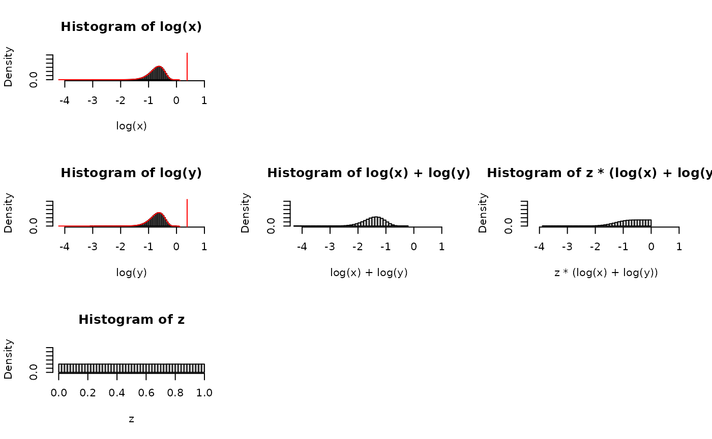

(XY)^Z Part III
Bruce J. Swihart
2025-05-16
Source:vignettes/articles/xy_to_the_z_part_iii.Rmd
xy_to_the_z_part_iii.RmdIN PROGRESS
I’m about 8 months late to the party, but a challenge problem from 3blue1brown caught my attention, as well as a call for intuitive approaches.
Here’s the challenge mode for all you math whizzes. Sample three numbers x, y, z uniformly at random in [0, 1], and compute (xy)^z. What distribution describes this result?
Answer: It’s uniform!
I know how to prove it, but haven’t yet found the “aha” style explanation where it feels expected or visualizable. If any of you have one, please send it my way and I’ll strongly consider making a video on it.
– Grant Sanderson of 3blue1brown, 2024-09-10
Beta, Beta, Beta
In Part I, we kept Z as a U(0,1). This is because initially I swung for the fences, investigating generalizing the original problem of X,Y,Z being all uniform to X,Y,Z being all beta and got some tantalizing results but I could not quite bring it to fruition. Below is the stub of code and I’ll write it up later.
Browser tabs that were useful on the search:
-
and using mathematica (check your files)
- which could lead to mathstatica as reviewed here
- and/or Rubi
- which led to reading about 2F1()
nsims <- 1e7
aa <- 8#2#1#8.5
bb <- 8#2#1#8.5
x <- rbeta(nsims, aa, bb)
y <- rbeta(nsims, aa, bb)
z <- rbeta(nsims, 1, 2-1)
cor(x ,y )
#> [1] -0.0002956492
cor(x^z,y^z) ## bc z is random
#> [1] 0.7346134
cor(x^19, y^19)
#> [1] 0.0006771847
xytothez <- (x*y)^z
par(mfrow=c(1,2))
hist(xytothez, freq=FALSE, breaks=50)
mean(xytothez)
#> [1] 0.5357581
var(xytothez)
#> [1] 0.05108758
var(xytothez) + mean(xytothez)^2
#> [1] 0.3381244
hist(x, freq=FALSE, breaks=50)
mean(x)
#> [1] 0.5000299
var(x)
#> [1] 0.01470367
var(x) + mean(x)^2
#> [1] 0.2647336
moment_integrand <- function(x, k, a, b){
#beta(a + x*k, b) / beta(a,b) * dbeta(x, a, b)
beta(a + x*k, b) / beta(a,b) *
beta(a + x*k, b) / beta(a,b) *
dbeta(x, a, b)
}
mom2 <- as.numeric(
integrate(moment_integrand,
lower=0,
upper=1,
k=2, a=aa, b=bb)[1])
mom2
#> [1] 0.2642006
#var(x^z) + mean(x^z)^2
var(xytothez) + mean(xytothez)^2
#> [1] 0.3381244
beta(aa + 2, bb) / beta(aa,bb)
#> [1] 0.2647059
mom1 <- as.numeric(
integrate(moment_integrand,
lower=0,
upper=1,
k=1, a=aa, b=bb)[1])
mom1
#> [1] 0.4997182
#mean(x^z)
mean(xytothez)
#> [1] 0.5357581
beta(aa + 1, bb) / beta(aa,bb)
#> [1] 0.5
## effort into getting standardized axes for the quantities involved
s.xlim <- range(c(log(x),
log(y),
z,
log(x*y),
z*log(x*y)
)
) #c(-10,0)#c(-4,2)
s.ylim <- c(0, max(dbeta(seq(s.xlim[1],s.xlim[2],0.01), aa, bb)))
s.ylim
#> [1] 0.000000 3.142034
s.xlim
#> [1] -4.219205 1.000000
dlogbeta<-function(x,a,b) exp(a*x) * (1-exp(x))^(b-1) / beta(a,b)
par(mfcol=c(3,3))
hist(log(x), freq=FALSE, breaks=50, ylim=s.ylim, xlim=s.xlim)
lines(seq(s.xlim[1], s.xlim[2],0.01 ),
dlogbeta(seq(s.xlim[1], s.xlim[2],0.01 ),
aa,
bb),
col="red"
)
hist(log(y), freq=FALSE, breaks=50, ylim=s.ylim, xlim=s.xlim)
lines(seq(s.xlim[1], s.xlim[2],0.01 ),
dlogbeta(seq(s.xlim[1], s.xlim[2],0.01 ),
aa,
bb),
col="red"
)
hist( z , freq=FALSE, breaks=50, ylim=s.ylim, xlim=c(0,1))
plot(NA,NA,axes=F,xlim=c(0,1),ylim=c(0,1),xlab="",ylab="")
hist(log(x)+log(y), freq=FALSE, breaks=50, ylim=s.ylim, xlim=s.xlim)
plot(NA,NA,axes=F,xlim=c(0,1),ylim=c(0,1),xlab="",ylab="")
plot(NA,NA,axes=F,xlim=c(0,1),ylim=c(0,1),xlab="",ylab="")
hist(z*(log(x)+log(y)), freq=FALSE, breaks=50, ylim=s.ylim, xlim=s.xlim)
# lines(seq(s.xlim[1], s.xlim[2],0.01 ),
# dlogbeta(seq(s.xlim[1], s.xlim[2],0.01 ),
# aa,
# bb),
# col="red"
# )
plot(NA,NA,axes=F,xlim=c(0,1),ylim=c(0,1),xlab="",ylab="")
mean( log(x) )
#> [1] -0.7252979
digamma(aa) - digamma(aa+bb)
#> [1] -0.7253719
mean(z*(log(x)+log(y)))
#> [1] -0.7249533
var ( log(x) )
#> [1] 0.06860578
trigamma(aa) - trigamma(aa+bb)
#> [1] 0.06864323
var (z*(log(x)+log(y)) )
#> [1] 0.2210332
## attempts at new relations:
## attempts at new relations:
## attempts at new relations:
con <- 1.0055
var (z^con * con * (log(x)+log(y)))
#> [1] 0.2236243
mean (z^con * con * (log(x)+log(y)))
#> [1] -0.7269401
con2 <- 0.0325
var (z*(log(x)+log(y) - con2 ))
#> [1] 0.228978
mean(z*(log(x)+log(y) - con2 ))
#> [1] -0.7411953
var (z*(log(x)+log(y)+ (log(x)*log(y)) ) )
#> [1] 0.07624856Normal Approximation
- So if we get a result generalizing to betas, interesting to note the normal approximation for betas
nsims <- 1e6
## https://en.wikipedia.org/wiki/Beta_distribution#Normal_approximation_to_the_Beta_distribution
aa<-bb<-5.5
mu <- 0.5
sig <- (1/(4*(2*aa+1)))
x <- rnorm(nsims, mu, sig)
y <- rnorm(nsims, mu, sig)
z <- rnorm(nsims, mu, sig)
par(mfrow=c(1,2))
hist((x*y)^z, freq=FALSE, breaks=50)
mean((x*y)^z)
#> [1] 0.4999955
var((x*y)^z)
#> [1] 0.0004262521
hist(rnorm(nsims, mu,sig), freq=FALSE, breaks=50)